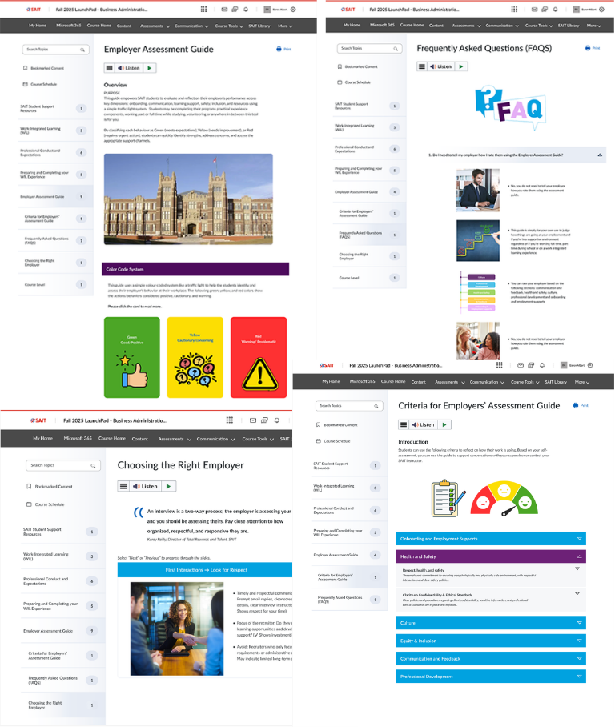
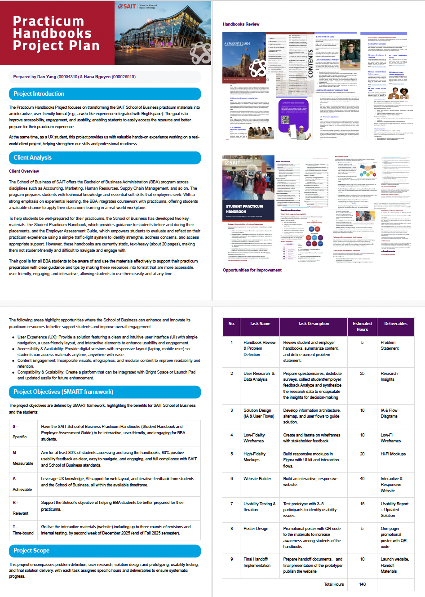
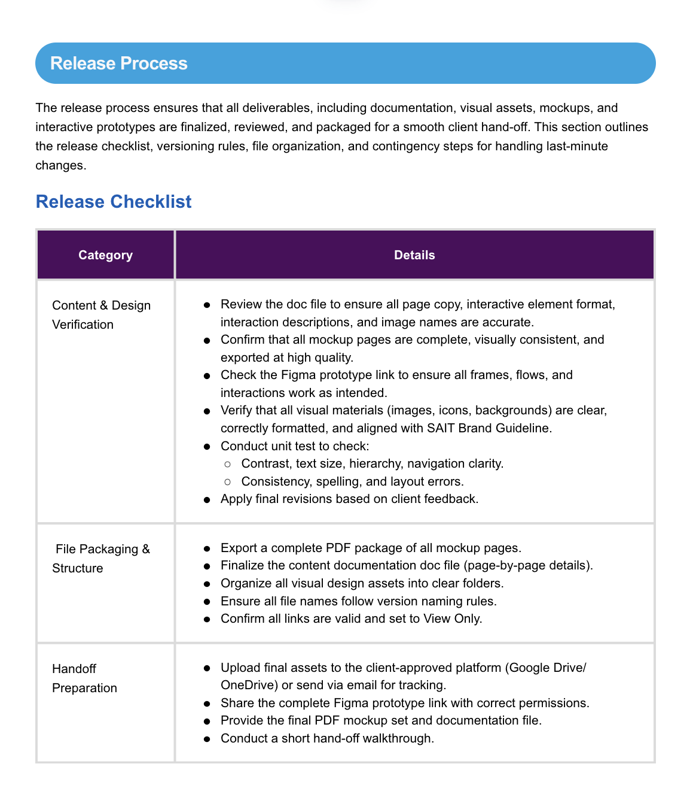
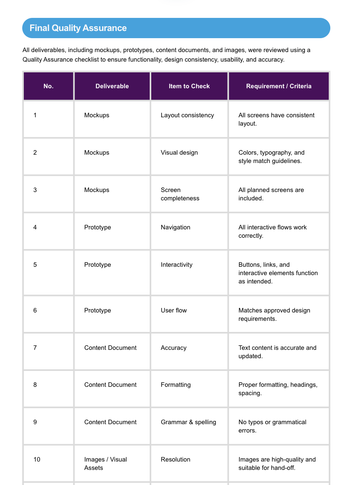
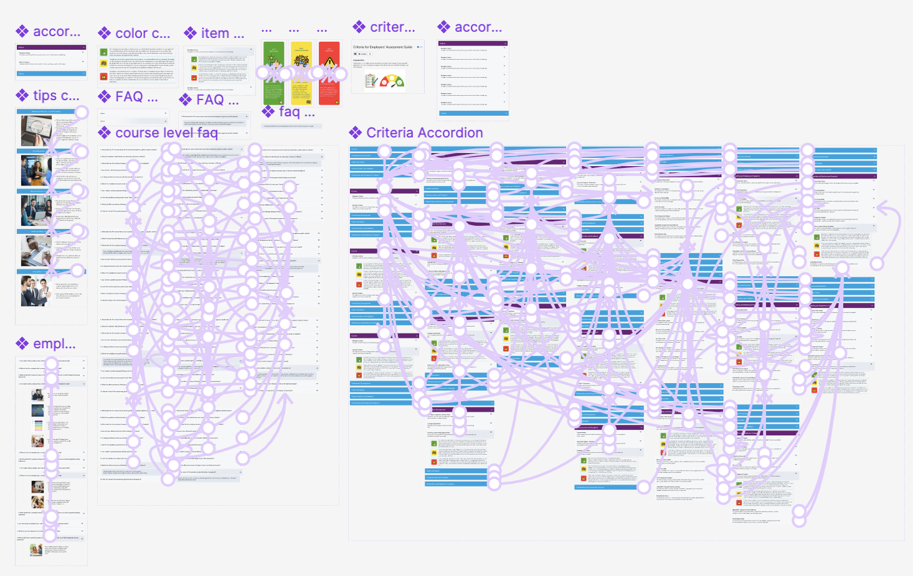

Employer Assessment Guide
Core Competencies Applied
Usability Auditing
Conducted rigorous accessibility audits to ensure the assessment guide met industry standards for diverse learner groups.
Workflow Mapping
Visualized complex evaluation processes to identify friction points and streamline the assessment logic.
Modular Content Structuring
Deconstructed dense academic and professional criteria into bite-sized, interactive modules for better knowledge retention.
High-Fidelity Prototyping
Leveraged Figma to build a fully interactive, responsive prototype that mimics the final LMS environment.
Component Library Management
Maintained a scalable UI library to ensure visual consistency and efficient design handoff for platform implementation.
UX Writing
Crafted simplified microcopy and clear instructions to align with the professional yet accessible tone of the School of Business.
Accessibility-Compliant Design
Implemented WCAG 2.1 color contrast and typography standards, securing the award for Best Accessibility Design.
LMS Constraints Management
Navigated the technical limitations of Brightspace/D2L to ensure the design was both aesthetically pleasing and technically feasible.
Visual Journey




